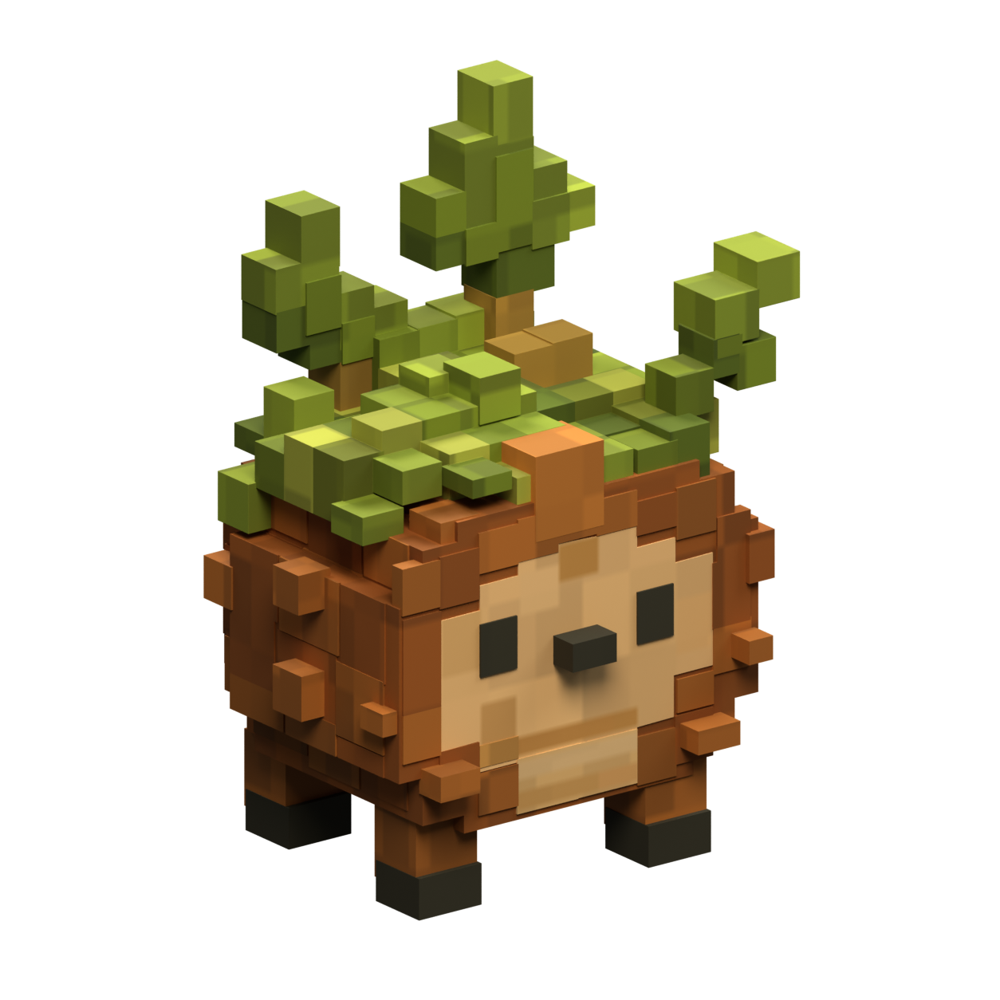
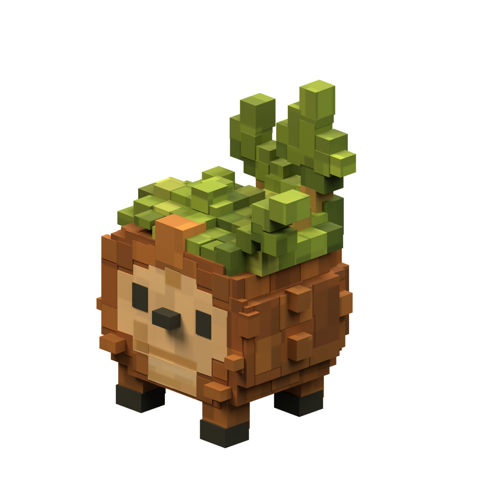
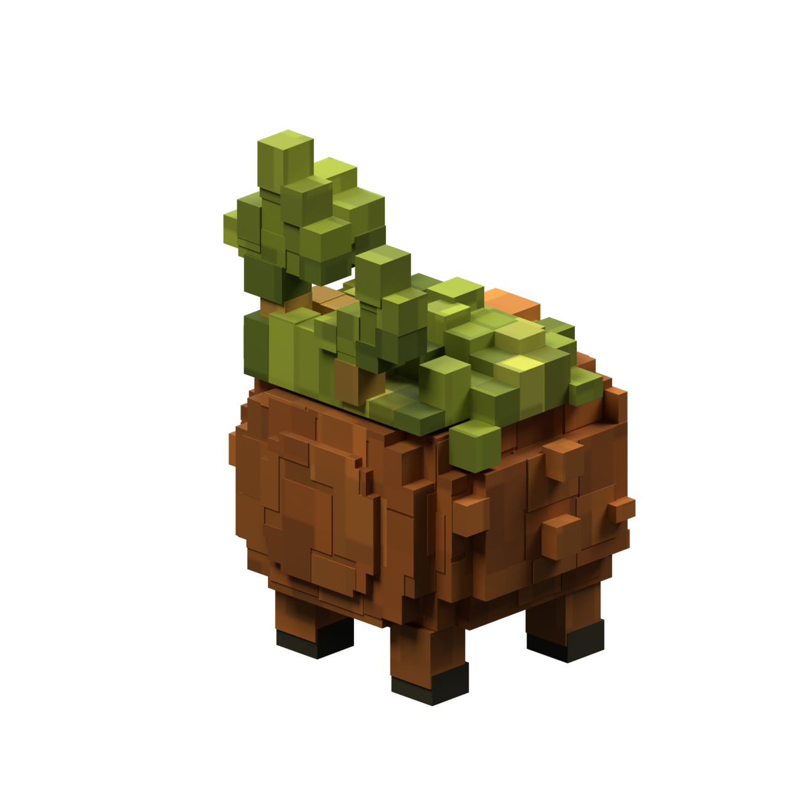
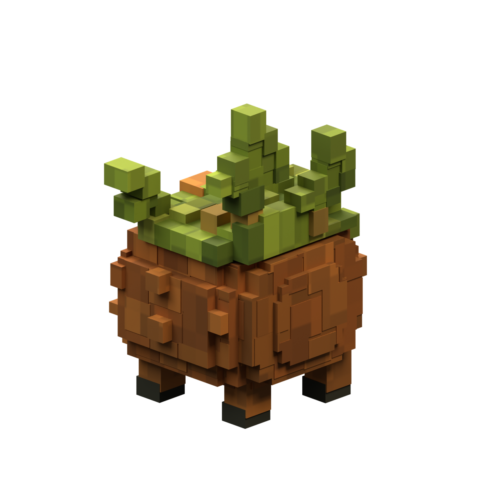
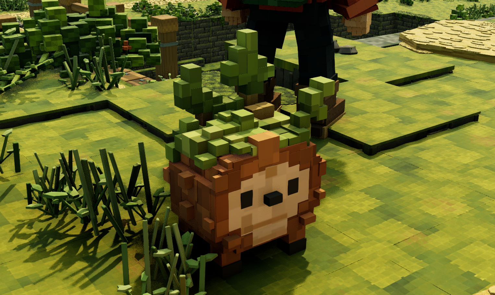
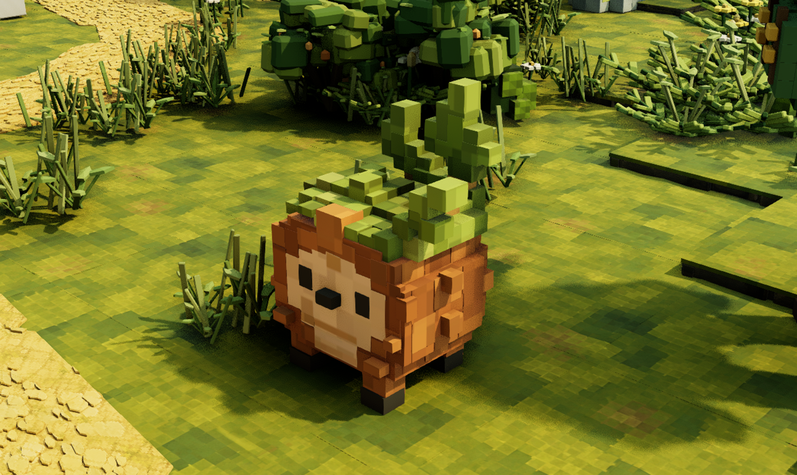
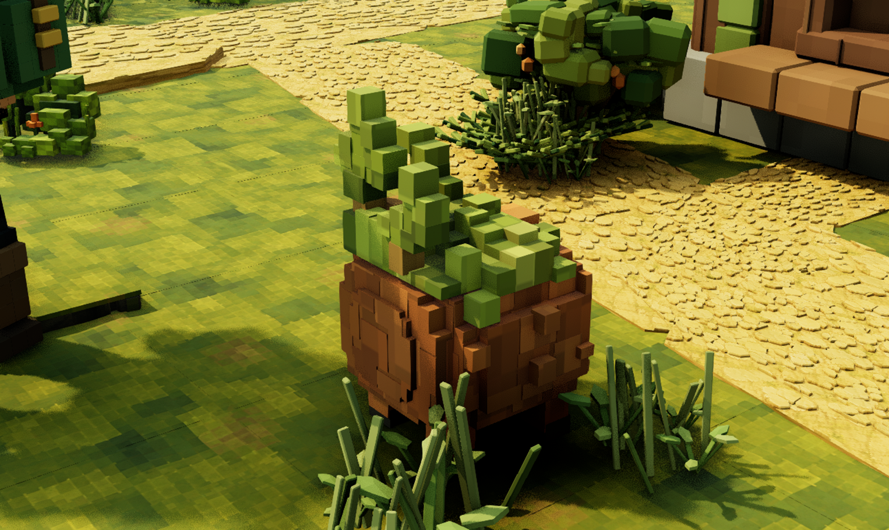
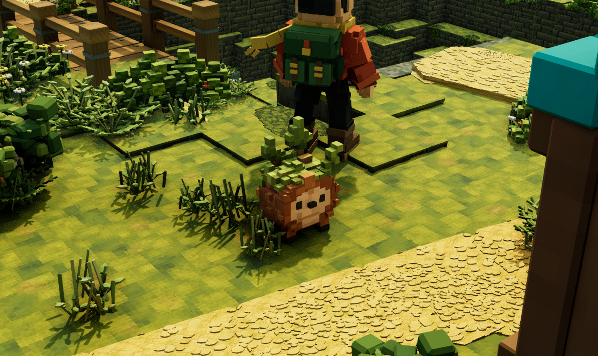

Brambit is a physical Blender model with a stepped bark body, tan face, four feet, an asymmetric moss crown and three leafy shoots. This revision reduces the depth mismatch between the forehead, front bark courses and belly. The forehead is now 1.3 mm ahead of the tan face instead of 15 mm; the other front courses and belly are 1 mm ahead. The body core is 2 mm behind the face. These changes reduce the dark seams seen in R17 while retaining the projecting nose and bark knots. Nineteen evaluated surface samples and all 22 authored front planes pass the depth check. The model retains five connected closed volumes, 185 hidden editable construction parts, 48,748 exported triangles, one opaque nonmetallic material and three packed 1024-pixel PNG8 maps. The Blender project reopened independently, all source faces have UV area, and the current FBX and material bindings passed Unreal map reload verification. Twenty imported sole samples across four feet pass static support checks, with maximum uneven-ground clearance of 3.28 mm. Brambit is saved in HomesteadBlender at 74.78 cm tall. Four studio angles and four native Unreal views were inspected. Crown shape, face texture clarity, color, bark divisions and leaf details remain unfinished. The comparison is evidence of progress, not a claim of perfect fidelity.







